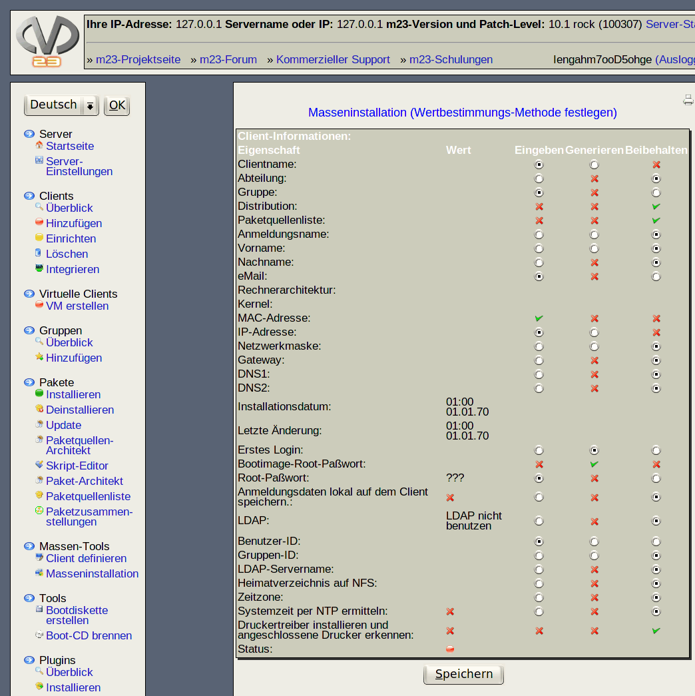

Nächste Seite:
Es stehen 3 Methoden
Aufwärts:
Masseninstallation
Vorherige Seite:
Hinweis
Inhalt
Wertbestimmungs-Methode festlegen

Hier können Sie festlegen, wie die Eigenschaftswerte der Clients generiert werden sollen.
Unterabschnitte
Es stehen 3 Methoden zur Auswahl
root 2016-10-07